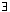
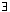

Definition
One may define a sequence (an) by giving an explicit formula for the nth term.
- (1/n) = ( 1 , 1/2 , 1/3 , ... )
- (sin(πn/4)) = (1/√2 ,1 , 1/√2 , 0 , -1/√2 ,-1 , -1/√2 , 0 , ... )
- ( (5n+2)/(3n+1) ) = ( 7/4 , 12/7 , 17/10 , 22/13 , 27/16 , ... )
One may define a sequence by a recurrence relation. This gives a formula for the nth term in terms of earlier ones.
- an+1 = an/(an+ 1), a1 = 1.
This gives the sequence ( 1 , 1/2 , 1/3 , 1/4 , ... ). - fn+2 = fn+1 + fn and f1 = f2 = 1.
This gives (1, 1, 2, 3, 5, 8, 13, 21, 34, 55, 89, 144, ... )This is the Fibonacci sequence first introduced by the Italian mathematician Fibonacci or Leonard of Pisa (1170 to 1250) and much studied by Edouard Lucas (1842 to 1891).
- an+1 = (an+ 2/an)/2 and a1 = 1.
This gives ( 1 , 3/2 , 17/12 , 577/408 , 665857/470832 , ... ) which is approximately ( 1, 1.5, 1.41667, 1.414215, 1,414213562, ... )This is the result of applying Newton's method for solving an equation to x2 = 2 and hence gives a method of calculating √2.
- an+1 = an + 1/n2 and a1 = 0.
This gives the sequence ( 0 , 1 , 5/4 , 49/36 , 205/144 , 5269/3600 , ... ) which is approximately ( 0, 1, 1.25, 1.3611, 1.423611, 1.463611, ... )
These are the partial sums of the series (1/i2) which the Swiss mathematician Leonhard Euler (1707 to 1783) proved "settles down" to 1.6449... = π2/6.
(1/i2) which the Swiss mathematician Leonhard Euler (1707 to 1783) proved "settles down" to 1.6449... = π2/6.
One may think of a sequence as being used to approximate a real number which might be difficult to get hold of directly. For example, the sequence 6) above gives approximations to the number √2.
The main thing to remember is:
Informal definition
We get the rigorous statement corresponding to the above:
Definition
given ε > 0, there exists N ∈ N such that if n > N then | an- α | < ε.
- The N that it is necessary to choose will depend on what ε you are using. In general, the smaller the ε the bigger you will have to choose N.
- Note that all the terms an with n > N must approximate α to better than ε.
- In terms of quantifiers we may express this as:
A sequence (xi)→ α if ( ε > 0) (N ∈ N)( n > N)(|xn - α| < ε)
ε > 0) (N ∈ N)( n > N)(|xn - α| < ε)
Note that since the "(N ∈ N)" occurs after the "(ε > 0)" the value of N that we must find is allowed to depend upon ε.
- A sequence which does not converge is called divergent.
Examples
- The sequence ( 1 , 1/2 , 1/3 , ... ) is convergent to 0.
Proof
Given ε use the Archimedian property to choose N with 1/N≤ ε. Then if n > N we have 1/n < 1/N ≤ ε.
- The sequence ( 1, 2, 3, 4, ... ) is not convergent (to any limit).
Proof
We will see later than any unbounded sequence does not converge.
- The sequence (1, 3/2 , 11/6 , 25/12 , 137/60 , 49/20 , ... ) = (1 , 1 +1/2 , 1 +1/2+1/3 , 1 +1/2+1/3+1/4 , ... ), where an=
 (1/i), is not convergent.
(1/i), is not convergent.
Proof
The terms of this sequence are the partial sums of the harmonic series(1/i). This result was first proved by Jacob Bernoulli (1654 to 1705)
Group the terms of the series in the following way.
1 + 1/2 + (1/3+1/4) + (1/5+1/6+1/7+1/8) + (1/9+1/10+ ... +1/16) + ...
and these terms are bigger than the terms of
1 + 1/2+ (1/4+1/4) + (1/8+1/8+1/8+1/8) + (1/16+1/16+ ... +1/16) + ... = 1 + 1/2 + 1/2 + 1/2 + ...
and the partial sums of this series are clearly unbounded.
- The sequence ( 1, 0, 1, 0, 1, 0, 1, 0, ... ) is not convergent even though it is bounded.
| Previous page (Axioms for the Real numbers) | Contents | Next page (Some properties of convergent sequences) |